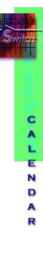

August, 1996
- Aug 4-9
Wango:iw
Siggraph '96 in New Orleans
The wango:iw art project explores the capabilities of signs,
symbols and languages to devise a model for communication in a networked
accessible VRML environment. By addressing the issue of universal communication
and ownership, Team CADRE is collaboratively developing a code of signs
and symbols to create a new means of communication based on individual perception.
Wango:iw is a technology based art installation which will
evolve in participant interaction. The participant will be engaged in network
exploration. The experience is a process of exploring our system and creating
a place for people to interact and communicate in visual networked spaces.
September, 1996
- Sept 18-20
ISEA 96
Rotterdam, The Netherlands. ISEA 96: The Seventh International Symposium
on Electronic Art. Special emphasis will be given to the following themes:
Education as a bridge between technology and art; Networked art; Design
and the Web.
Special events: The Reality of Virtual Reality; Virtual Community
Contact: ISEA 96, POB 8656, 3009 AR Rotterdam, Netherlands; tel/fax: 31-10-4778605
Email: isea96@hro.nl
Spring, 1997
- The Artificial Evolution Studio is planning a concert-exhibition
for the spring of 1997. This event will present a full-blown concert of
music created using artificial life, as well as an exhibition of other art
employing the same techniques.
Areas of interest include, but are not restricted to:
- Genetic Algorithms
- Cellular Automata (Conway's Life)
- L Systems (Lindenmeyer's artificial botany)
- Computer Viruses
- Dawkin's Biomorphs
- Artificial organisms (Langton's Vants, Reynolds' Boids, MIT Mobots)
- Artificial environments (Tiara, Venus)
Interested in applications of these ideas to:
- music composition
- sound and image synthesis
- computer animation
- interactive sculpture
- installation art
The concert component will include diffused electroacoustic music as well
as pieces played by live performers and other "autonomous agents"
(computers or robots), and could include non-technical systems demonstrations.
The exhibition component will include computer graphics, prints and photographs,
robots and autonomous agents, video and "life" computer animation,
as well as interactive displays and presentations. The focus of this event
will be the artistic manifestation of artificial life in any form. If you
are currently working in this area and would like to participate, please
contact:
Bruno Degazio (degazio@mail.north.net)
The Artificial Evolution Studio
192 Spadina Avenue, Sutie 512
Toronto, Ontario, Canada M5T 2C2
416-504-9354 FAX
Tentative list of contributors to the Artificial Life Event 1997:
- Al Biles (United States)
- Eduardo Miranda
- Jon McCormack
(Australia)
- Andrew Horner (Hong Kong)
- Kurt Thywissen (England)
- Demetri Terzopoulos (Canada)
- David DeMaris
(United States)
- Guillaume Hutzler (France)
- Robert Saunders (Scotland)
- Peter Beyls (Belgium)
- Jeffrey Ventrella (United States)
- Kerstin Dautenhahn (Germany)
- Alan Dorin (Australia)
- Bruce Jacob (United States)